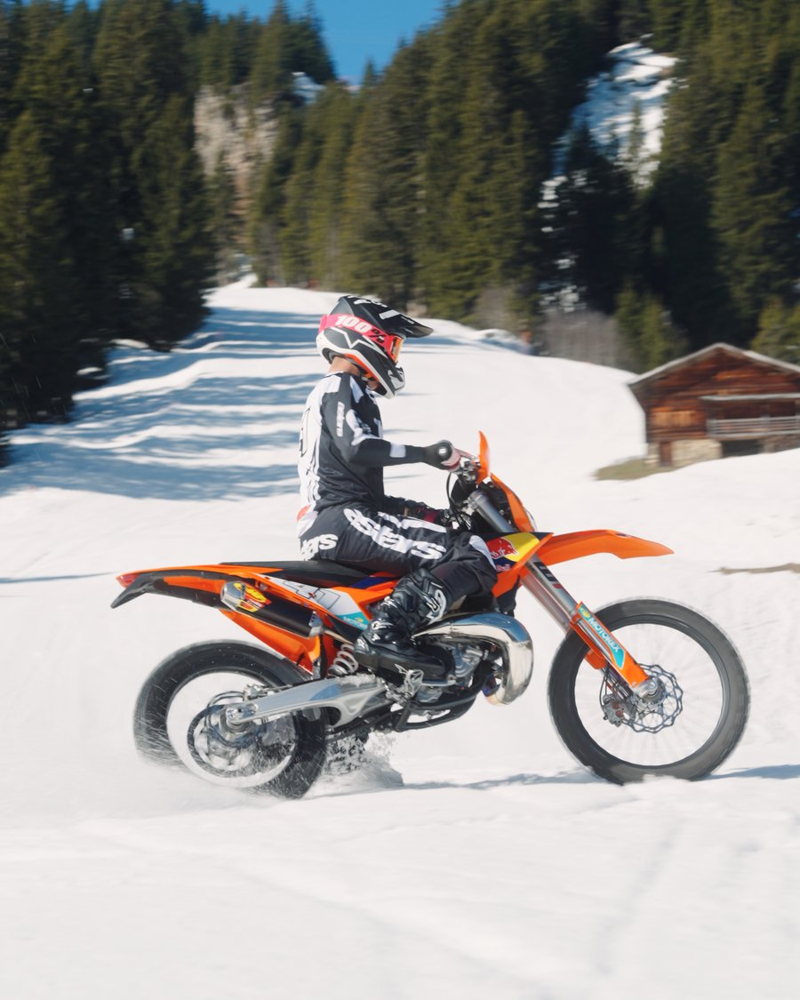

Dreifach-Olympiasieger tauscht Skis gegen Bike.
Skis aus, Motor an.Ein Tag zwischen Olympiasieger, Motocross, Schnee und jeder Menge Adrenalin? Genau unser Ding.
Unser Auftrag
Für uns bestand der Auftrag darin, den Videodreh von Franjo von Allmen x Red Bull x KTM an der Lenk fotografisch und videografisch zu begleiten und den gesamten Produktionstag aus einer authentischen Behind-the-Scenes-Perspektive festzuhalten.
Im Fokus standen die unterschiedlichen Facetten des Drehtags: Franjo als Skirennfahrer, der Wechsel von den Ski auf die mit Spikes bereifte KTM Motocross-Maschine sowie die Action auf und neben der Piste. Wir begleiteten den Dreh von den ersten Vorbereitungen über die Ski- und Motorradaufnahmen bis hin zu den letzten Szenen des Tages.
Aus dem umfangreichen Material entstand ein dynamisches Behind-the-Scenes-Reel, das den Tag aus nächster Nähe erlebbar macht. Neben spektakulären Fahraufnahmen zeigen wir die Momente dazwischen: Vorbereitung, Setup, Interaktion, spontane Situationen und die Stimmung am Set. So entsteht mehr als ein klassisches Making-of — ein authentischer Einblick in einen aussergewöhnlichen Drehtag an der Lenk, der die Menschen, die Action und die Entstehung des eigentlichen Films miteinander verbindet.

Was wir geliefert haben
Behind-the-Scenes
Making-of-Content, der die Geschichte hinter der Aktion sichtbar macht. Wie entstand die Idee? Wer steckt dahinter? Und wie hat sich der Tag vor Ort angefühlt?
Der Blick hinter die Kulissen schafft Nähe, Persönlichkeit und echte Emotionen — und liefert genau den Kontext, den ein reines Action-Video nicht vermitteln kann. So wird aus spektakulärem Content eine Geschichte, mit der sich die Community identifizieren kann.
Action-Reel
Dynamisch geschnittenes Short-Reel für Social Media — mit schnellen Schnitten, starkem Sound und einer klaren Bildsprache. Kurz, prägnant und auf den Punkt. Perfekt, um Emotionen, Action oder eine Geschichte in Sekundenschnelle zu vermitteln, Aufmerksamkeit zu gewinnen und deine Community auf Instagram, TikTok & Co. zum Weiterschauen zu bringen.
Bildreportage
Bildreportage vom Drehtag in voller Auflösung — unabhängig vom Video vielseitig einsetzbar. Authentische Bilder, die Momente, Emotionen und Details festhalten und sich perfekt für Website, Social Media, Print oder die nächste Kampagne eignen.
So entsteht ein hochwertiges Bildarchiv, das weit über den Drehtag hinaus Mehrwert schafft und langfristig für deinen Content genutzt werden kann.
Color Grading
Der richtige Look entscheidet, wie sich ein Film anfühlt. Farben, Kontraste und Lichtstimmung werden gezielt abgestimmt, um aus einzelnen Aufnahmen einen stimmigen, cinematischen Gesamtlook zu schaffen.
So bekommt das gesamte Material eine klare visuelle Handschrift — hochwertig, atmosphärisch und konsequent von der ersten bis zur letzten Szene.